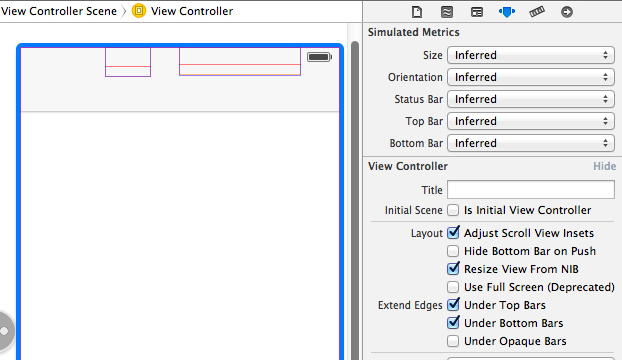
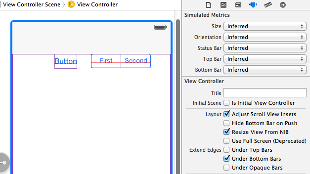

I recently downloaded Xcode 5 DP to test my apps in iOS 7. The first thing I
noticed and confirmed is that my view's bounds is not always resized to
account for the status bar and navigation bar.
In viewDidLayoutSubviews, I print the view's bounds:
{{0, 0}, {320, 568}}
This results in my content appearing below the navigation bar and status bar.
I know I could account for the height myself by getting the main screen's
height, subtracting the status bar's height and navigation bar's height, but
that seems like unnecessary extra work.
How can I fix this issue?
Update:
I've found a solution for this specific problem. Set the navigation bar's
translucent property to NO:
self.navigationController.navigationBar.translucent = NO;
This will fix the view from being framed underneath the navigation bar and
status bar.
However, I have not found a fix for the case when you want the navigation bar
to be translucent. For instance, viewing a photo full screen, I wish to have
the navigation bar translucent, and the view to be framed underneath it. That
works, but when I toggle showing/hiding the navigation bar, I've experienced
even stranger results. The first subview (a UIScrollView) gets its bounds y
origin changed every time.
Answer
You can achieve this by implementing a new property called
edgesForExtendedLayout in iOS7 SDK. Please add the following code to achieve
this,
if ([self respondsToSelector:@selector(edgesForExtendedLayout)])
self.edgesForExtendedLayout = UIRectEdgeNone;
You need to add the above in your -(void)viewDidLoad method.
iOS 7 brings several changes to how you layout and customize the appearance
of your UI. The changes in view-controller layout, tint color, and font
affect all the UIKit objects in your app. In addition, enhancements to
gesture recognizer APIs give you finer grained control over gesture
interactions.
Using View Controllers
In iOS 7, view controllers use full-screen layout. At the same time, iOS 7
gives you more granular control over the way a view controller lays out its
views. In particular, the concept of full-screen layout has been refined to
let a view controller specify the layout of each edge of its view.
The wantsFullScreenLayout view controller property is deprecated in iOS 7.
If you currently specify wantsFullScreenLayout = NO, the view controller
may display its content at an unexpected screen location when it runs in iOS
7.
To adjust how a view controller lays out its views, UIViewController
provides the following properties:
The edgesForExtendedLayout property uses the UIRectEdge type, which
specifies each of a rectangle’s four edges, in addition to specifying none
and all. Use edgesForExtendedLayout to specify which edges of a view
should be extended, regardless of bar translucency. By default, the value of
this property is UIRectEdgeAll.
-
extendedLayoutIncludesOpaqueBars
If your design uses opaque bars, refine edgesForExtendedLayout by also
setting the extendedLayoutIncludesOpaqueBars property to NO. (The
default value of extendedLayoutIncludesOpaqueBars is NO.)
-
automaticallyAdjustsScrollViewInsets
If you don’t want a scroll view’s content insets to be automatically
adjusted, set automaticallyAdjustsScrollViewInsets to NO. (The default
value of automaticallyAdjustsScrollViewInsets is YES.)
-
topLayoutGuide, bottomLayoutGuide
The topLayoutGuide and bottomLayoutGuide properties indicate the
location of the top or bottom bar edges in a view controller’s view. If bars
should overlap the top or bottom of a view, you can use Interface Builder to
position the view relative to the bar by creating constraints to the bottom
of topLayoutGuide or to the top of bottomLayoutGuide. (If no bars should
overlap the view, the bottom of topLayoutGuide is the same as the top of
the view and the top of bottomLayoutGuide is the same as the bottom of the
view.) Both properties are lazily created when requested.
Please refer, apple doc
Suggest
You don't have to calculate how far to shift everything down, there's a build
in property for this. In Interface Builder, highlight your view controller,
and then navigate to the attributes inspector. Here you'll see some check
boxes next to the words "Extend Edges". As you can see, in the first
screenshot, the default selection is for content to appear under top and
bottom bars, but not under opaque bars, which is why setting the bar style to
not translucent worked for you.
As you can somewhat see in the first screenshot, there are two UI elements
hiding below the navigation bar. (I've enabled wireframes in IB to illustrate
this) These elements, a UIButton and a UISegmentedControl both have their "y"
origin set to zero, and the view controller is set to allow content below the
top bar.

This second screenshot shows what happens when you deselect the "Under Top
Bars" check box. As you can see, the view controllers view has been shifted
down appropriately for its y origin to be right underneath the navigation bar.

This can also be accomplished programmatically through the usage of
-[UIViewController edgesForExtendedLayout]. Here's a link to the class
reference for edgeForExtendedLayout, and for UIRectEdge
[self setEdgesForExtendedLayout:UIRectEdgeNone];